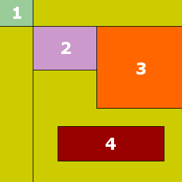
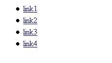
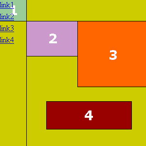

Emulare le immagini mappate con i CSS
Tramite i CSS è possibile realizzare immagini mappate utilizzando una semplice lista di link. Il codice XHTML è assolutamente semplice e totalmente accessibile con qualsiasi dispositivo. Il codice CSS è di facile comprensione e completamente personalizzabile.
L'esempio
La pagina di esempio, se visitata con un browser in grado di supportare i CSS, presenta una semplice immagine con quattro aree distinte. Ad ogni immagine sarà associato un link.
Il codice XHTML utilizzato è di seguito riportato:
<ul id="mappa1">
<li id="mappa1-link1"><a title="link area 1" href="link1"><span class="alt">link1</span></a></li>
<li id="mappa1-link2"><a title="link area 2" href="link2"><span class="alt">link2</span></a></li>
<li id="mappa1-link3"><a title="link area 3" href="link3"><span class="alt">link3</span></a></li>
<li id="mappa1-link4"><a title="link area 4" href="link4"><span class="alt">link4</span></a></li>
</ul>
Come si vede, si tratta di una semplice lista, con opportuni identificatori. Alla mappa è stato associato l'identificatore mappa1, per distinguerla da altre eventuali mappe. Ad ogni elemento della lista è stato associato un differente identificatore per distinguere i differenti link. Il testo alternativo da associare ad ogni area della mappa è stato inserito tramite l'attributo title dei link. Si noti che tale testo alternativo non occorre per i browser non grafici, che di fatto leggono il normale testo dei link, ma per i browser in grado di interpretare i CSS (non sempre l'immagine è completamente "auto-esplicativa").
Il codice CSS utilizzato per l'esempio è il seguente:
ul#mappa1 {
margin:0;padding:0;
list-style:none;
position:relative;
width:300px;height:300px;
background:url("mappa.gif") no-repeat;
}
ul#mappa1 li {
display:block;
position:absolute;
margin:0;padding:0
}
li#mappa1-link1 {
left:0;top:0;
width:54px;height:43px
}
li#mappa1-link2 {
left:55px;top:44px;
width:104px;height:71px
}
li#mappa1-link3 {
left:160px;top:44px;
width:140px;height:134px
}
li#mappa1-link4 {
left:96px;top:209px;
width:174px;height:56px
}
#mappa1 a {
display:block;
width:100%;
height:100%;
}
#mappa1 .alt { display:none }
Il codice CSS
Senza il codice CSS, la mappa appare come un normale lista.
In questo modo, con qualsiasi browser, i link saranno accessibili.
ul#mappa1 {
margin:0;padding:0;
list-style:none;
position:relative;
width:300px;height:300px;
background:url("mappa.gif") no-repeat;
}
Innanzi tutto eliminiamo i margini e il padding propri della lista e i marcatori della lista (tramite la proprietà list-style). La lista è posizionata in modo relativo in modo da costituire il riferimento per il posizionamento assoluto dei link al suo interno.
Altezza e larghezza della lista sono pari a quelli dell'immagine da mappare che sarà posta come sfondo della lista.
A questo punto il risultato che si ottiene è rappresentato dall'immagine di seguito riportata.
Si vede come in questo modo l'immagine da mappare è portata su schermo, per ora i link sono ancora disposti secondo la lista.
ul#mappa1 li {
display:block;
position:absolute;
margin:0;padding:0
}
li#mappa1-link1 {
left:0;top:0;
width:54px;height:43px
}
[...]
li#mappa1-link4 {
left:96px;top:209px;
width:174px;height:56px
}
Ogni elemento della lista è posizionato in modo assoluto. Tramite le proprietà top e left è possibile disporre ogni link nell'angolo superiore sinistro di ogni area da mappare. Tramite le proprietà width ed height si determina l'area occupata da ogni elemento della lista. Tale area deve sovrapporsi alla zona corrispondente nell'immagine da mappare.
Si noti che ogni link occupa ancora solamente l'area del testo.
#mappa1 a {
display:block;
width:100%;
height:100%;
}
Affinché sia cliccabile tutta l'area occupata da ogni elemento della lista, si è trasformato il il tag A in block e le dimensioni orizzontale e verticale sono poste pari al 100%.
In questo modo, il link occupa tutta l'area a sua disposizione, ovverosia tutta l'area occupata dall'elemento della lista in cui il link è inserito. Ricordiamo che ogni elemento della lista occupa un'area pari a quella della zona da mappare.
#mappa1 .alt { display:none }
Infine eliminiamo il testo dal link, sfruttando la proprietà display associata alla classe alt.
Vantaggi e limiti
Vantaggi
I vantaggi sono evidenti. La lista di link è accessibile con qualsiasi dispositivo per l'accesso ad internet, compresi PDA e smartphone. Il codice XHTML necessario è semplice e leggero, con vantaggi evidenti sul peso delle pagine e sul traffico. Si ricordi che il codice CSS rimane nella cache del computer, mentre il codice (X)HTML deve sempre essere ricaricato.
Il codice CSS necessario è molto semplice ed intuitivo, facilmente personalizzabile.
Il metodo è compatibile con Opera 5 e superiori, Internet Explorer 5 (Win/Mac) e superiori, Netscape Navigator 6 e superiori, Mozilla, Konqueror 3 e Safari.
Limiti
L'unico vero limite di questo metodo (trascurando l'ovvia incompatibilità con Netscape Navigator 4) consiste nel fatto che le aree mappabili possono essere solo rettangolari. In alcuni casi le immagini mappate richiedono aree cliccabili di forma differente, ma aree rettangolari hanno sicuramente un vasto campo di applicazione.
File correlati
Articoli correlati:
Strumenti


.ConStile è disponibile anche in XML.
Some Rights Reserved. This work is licensed under a Creative Commons License.